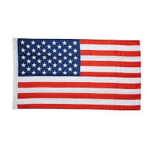

HIPHOP STARS
Kanye West
Location:United StatesSocial Media:@kanyew.est
Born:
8 June 1977 (age 42)
Born In
Atlanta, Fulton County, Georgia, United States
Kanye Omari West (born June 8, 1977 in Atlanta, Georgia), also known as Ye, is a Grammy award-winning American rapper, producer, singer, author, and fashion designer.
Eminem
Location:United StatesSocial Media:@eminem
Biography
Born 17 October 1972 (age 47) Born In St. Joseph, Buchanan County, Missouri, United States Marshall Bruce Mathers III (born October 17, 1972), known professionally as Eminem (often stylized as EMINƎM), is an American rapper, songwriter, record producer, record executive, and actor. Eminem is the best-selling artist of the 2000s in the United States. Throughout his career, he has had 10 number-one albums on the Billboard 200 and five number-one singles on the Billboard Hot 100. With more than 47.4 million albums and 107.5 million singles sold in the U.S. and 220 million records globally, he is among the world's best-selling artists of all time and is consistently cited as one of the greatest and most influential artists in any genre. He is the only artist to have eight albums consecutively debut at number one on the Billboard 200. Rolling Stone ranked him 83rd on its list of 100 Greatest Artists of All Time, calling him the "King of Hip Hop". After his debut album Infinite (1996) and then Slim Shady EP (1997), Eminem signed with Dr. Dre's Aftermath Entertainment and subsequently achieved mainstream popularity in 1999 with The Slim Shady LP, which earned him his first Grammy Award for Best Rap Album. His next two releases, 2000's The Marshall Mathers LP and 2002's The Eminem Show, were worldwide successes, with each being certified diamond in U.S. sales and both winning Best Rap Album Grammy Awards—making Eminem the first artist to win the award for three consecutive LPs. They were followed by Encore in 2004, another critical and commercial success. Eminem went on hiatus after touring in 2005, releasing Relapse in 2009 and Recovery in 2010. Both won Grammy Awards and Recovery was the best-selling album of 2010 worldwide, the second time he had the international best-selling album of the year (after The Eminem Show). Eminem's eighth album, 2013's The Marshall Mathers LP 2, won two Grammy Awards, including Best Rap Album; it expanded his record for the most wins in that category and his Grammy total to 15. In 2017, he released his ninth studio album, Revival. On August 31, 2018, Eminem released his tenth studio album, Kamikaze, to streaming services Apple Music, Spotify, and Amazon Music.
see more
Drake
Location: Canada
Social Media:@drake
Biography
Aubrey Drake Graham (born October 24, 1986) is a Canadian rapper, singer, songwriter, record producer, actor, and businessman. Drake gained recognition as an actor on the teen drama television series Degrassi: The Next Generation in the early 2000s. Intent on pursuing a career in music, he left the series in 2007 after releasing his debut mixtape, Room for Improvement. He released two further independent projects, Comeback Season and So Far Gone, before signing to Lil Wayne's Young Money Entertainment in June 2009. Drake released his debut studio album Thank Me Later in 2010, which debuted at number one on the US Billboard 200 and was soon certified platinum. His next two releases, 2011's Take Care and 2013's Nothing Was the Same, were critically and commercially successful; the former earned him his first Grammy Award for Best Rap Album. In 2015, he released two mixtapes—the trap-influenced If You're Reading This It's Too Late and collaboration with Future titled What a Time to Be Alive—both of which earned platinum certification in the U.S. His fourth album, Views (2016), broke several chart records. The dancehall-influenced album sat atop the Billboard 200 for 13 nonconsecutive weeks, becoming the first album by a male solo artist to do so in over 10 years. The album's second single, "One Dance", topped the charts in several countries, and became his first number-one single as a lead artist. That year, Drake led both the Billboard Hot 100 and the Billboard 200 charts simultaneously for eight weeks. Views achieved quadruple platinum status in the US, and earned over 1 million album-equivalent units in the first week of its release. It became Drake's best-selling album to date. Its lead single "Hotline Bling" peaked at number two on the Hot 100 and received Grammy Awards for Best Rap/Sung Performance and Best Rap Song. In 2017, he released the "playlist" More Life. It became his seventh consecutive number one on the Billboard 200, and set multiple streaming records. A year later, he released the double album Scorpion, which also broke several streaming records, and contains the Grammy Award winning number-one single "God's Plan", and the bounce-infused number one singles "Nice for What" and "In My Feelings". Among the world's best-selling music artists, with over 170 million records sold worldwide, he is ranked by the Recording Industry Association of America (RIAA) as the world's highest-certified digital singles artist. Drake holds several Billboard chart records. He has the most charted songs (205) among solo artists in the history of the Billboard Hot 100, the most simultaneously charted Hot 100 songs in a single week (27), the most time on the Hot 100 (431 weeks) and the most Hot 100 debuts in a week (22). He also has the most number one singles on the Hot Rap Songs, Hot R&B/Hip-Hop Airplay and Rhythmic Charts. Drake has also won four Grammy Awards, six American Music Awards, twenty-seven Billboard Music Awards and three Juno Awards. As an entrepreneur, Drake has founded the OVO Sound record label with longtime collaborator 40 in 2012.
see more
jayzee
Biography
Born 4 December 1969 (age 50) Born In Brooklyn, New York, New York, United States Shawn Corey Carter (born December 4, 1969 in Brooklyn, New York, United States), is an American rapper and former president and CEO of Roc A Fella Records. He is more commonly known by a variety of stage names including Jay-Z, S. Carter, Jigga, Hova, J-Hova, Hov, and Young Hov. He is regarded as one of the most prolific and successful American blend artists of the mid-90s and early 2000s and is known for his use of metaphors, freestyling abilities, word play, flow, and blending of street and popular hip hop. He is one of the most respected rappers in the music industry, and is admired for his ability to craft songs from memory without the use of pen and paper. He married his long time girlfriend Beyonce in April 2008 after dating for over seven years. He is one of the founders of Roc-A-Fella Records, a hip-hop record label which also launched the careers of artists such as Beanie Sigel, Kanye West, Memphis Bleek, Young Gunz, Freeway, and Teairra Mari. Early history Originally from the infamous Marcy Houses projects in the Bedford-Stuyvesant neighborhood in Brooklyn in New York City, Shawn Carter was abandoned by his father Adnes Reeves when he was only twelve years old and he was consequently raised by his mother Gloria Carter. Jay-Z attended George Westinghouse High School in Downtown Brooklyn, NYC and Trenton Central High School in Trenton, New Jersey but did not graduate. He claims to have been caught up in selling drugs on the streets of New York in the Marcy Projects. In addition to this, Jay-Z has lyrically alluded to having sold crack cocaine and marijuana in Virginia and Maryland. According to his mother, a young Jay-Z used to keep his siblings up at night banging out drum patterns on the kitchen table. Eventually, she bought him a boombox for his birthday and thus sparked his interest in music. He began freestyling, writing rhymes, and followed the music of many artists popular at the time.
Tupac Shakur
Biography
Born 16 June 1971 Born In East Harlem, Manhattan, New York, New York, United States Died 13 September 1996 (aged 25) Tupac Amaru Shakur (June 16, 1971–September 13, 1996), also known by his stage names, Makaveli and 2Pac, was an American hip-hop artist, poet and actor. He is listed in the Guinness Book of World Records as the best-selling rap/hip-hop artist ever, having sold over 75 million albums worldwide, including 44.5 million sales in the United States alone. He has had 17 top ten singles in the United States. Born in East Harlem section of Manhattan in New York City, Tupac frequently found his family changing place of residence. In 1988, his family moved and brought Tupac and his half-sister Sekyiwa to live with a family friend in Marin City, California (In the Bay Area). He loved the state of California and decided thats where he would continue to reside for the rest of his life. Shakur soon moved in with a neighbor and started selling drugs and hustling on the street, but he also became interested in rap music. With Ray Luv and DJ Dize, he started a rap group called Strictly Dope. Their recordings were later released in 2001 under the name Tupac Shakur: The Lost Tapes. Their neighborhood performances brought Tupac enough acclaim to land an audition with Shock G of Digital Underground. In 1990 he was hired as a back-up dancer for the alternative rap group Digital Underground. Tupac’s debut album, 2Pacalypse Now, gained critical recognition and a ranged amount of backlash for its controversial criticism of the police force. Shakur soon began to experience various law suits and legal troubles—most notably, he was convicted of sexually assaulting a woman in 1993. The day before the guilty verdict was issued, Shakur was shot five times in a recording studio lobby in Manhattan. Following the incident, Shakur grew suspicious that other rappers were involved in his shooting; the controversy would help spark the later East Coast-West Coast feud. After serving 8 months of his sentence for the assault, Shakur was bailed from prison by Marion “Suge” Knight, the CEO of Death Row Records.
Lil Wayne
Biography
Dwayne Michael Carter, Jr. (born September 27, 1982 in New Orleans, Louisiana), better known by many as Lil Wayne, is an American rapper. Formerly a member of the rap group Hot Boy$, he joined the Cash Money Records collective as a teenager. Get It How U Live, released in 1997, was Lil Wayne’s first album with Hot Boy$. Lil' Wayne's first solo album, Tha Block is Hot (1999), was certified platinum. His following albums, Lights Out (2000) and 500 Degreez (2002), went gold. Tha Carter (2004) brought Lil' Wayne even more success, specifically the hit single Go D.J.. Tha Carter II (2005) and Tha Carter III (2008) were his next studio efforts, with the latter being a runaway success selling over 1 million copies in the first week of release in the United States alone and winning the Grammy Award for Best Rap Album. It included the the singles Lollipop, A+Milli and Got+Money. Lil' Wayne released two albums in 2010; Rebirth, a rock concept album and I Am Not a Human Being, which was released while Carter served time for criminal possession of a weapon. Tha Carter IV (2011) featured singles 6 Foot 7 Foot, How to Love and She Will. By August 2012, Carter passed Elvis Presley as the male with the most entries on the Billboard Hot 100 chart, with 109 songs.
Nicki Minaj
Biography
Born 8 December 1982 (age 37) Born In Port of Spain, Trinidad, Trinidad and Tobago Onika Tanya Maraj (born December 8, 1982, in Trinidad and Tobago but now lives in New York City, New York, United States), better known by her stage name Nicki Minaj, is a Trinidadian-American, rapper and singer-songwriter signed to a joint venture between Lil Wayne's Young Money Entertainment and Universal Motown. After releasing several mixtapes and building substantial buzz online her debut album, Pink Friday, was released on November 22, 2010. In October 2010, Minaj became the first female rapper to have seven songs on the Billboard Hot 100 chart. Minaj has been creating mixtape tracks since 2004 and appeared in XXL magazine. In 2008 she won the Female Artist of the Year award at the Underground Music Awards. Pink Friday's lead buzz track, Massive Attack, features singer-rapper Sean Garrett and was released on April 13th 2010, peaking at #19 on the Billboard Top Heatseekers Songs chart. Your Love, the album's second single, was released on June 1st following a premature leak. The song peaked at #14 on the Billboard Hot 100 and at #1 on the Rap Songs chart, thus becoming Minaj's most successful single release at the time.
Cardi B
Biography
Born 11 October 1992 (age 27) Born In The Bronx, New York, New York, United States Cardi B (born Belcalis Almanzar on 11 October 1992) is an American hip-hop recording artist, as well as a television and social media personality. Born and raised in the Bronx borough of New York City, she first received public attention through Instagram and became an internet celebrity. She continued to gain more recognition in 2015, after becoming a regular cast member of the VH1 reality television series Love & Hip Hop: New York. In February 2017, Cardi B signed her first solo record deal with Atlantic Records. Cardi B continued to rise to prominence in September 2017, when her commercial debut single "Bodak Yellow" reached number 1 on the US Billboard Hot 100 chart. Her debut studio album, "Invasion of Privacy" arrived in April 2018. It debuted atop the Billboard 200 Albums Chart.
Dr Dre
Biography
Born 18 February 1965 (age 55) Born In Compton, Los Angeles County, California, United States André Romelle Young (born February 18, 1965 in Los Angeles, California), better known by his stage name Dr. Dre, is an American record producer, rapper, actor and record executive. He is the founder and current CEO of Aftermath Entertainment and a former co-owner and artist of Death Row Records, also having produced albums for and overseeing the careers of many rappers signed to those record labels. As a producer he is credited as a key figure in the popularization of West Coast G-funk, a style of rap music characterized as synthesizer-based with slow, bass heavy beats. Dr. Dre began his career in music as a member of the World Class Wreckin' Cru and he later found fame with the influential gangsta rap group N.W.A, which popularized the use of explicit lyrics in rap to detail the violence of street life. His 1992 solo debut The Chronic, released under Death Row Records, led him to become one of the best-selling American performing artists of 1993. In 1996 he left Death Row to found his own label Aftermath Entertainment, producing a compilation album, Dr. Dre Presents the Aftermath, in 1997 and releasing a solo album titled 2001 in 1999. During the 2000s he focused his career on production for other artists, while occasionally contributing vocals in other artists' songs. Rolling Stone named him among the highest-paid performers of 2001 and 2004. Dr. Dre also had acting roles in the 2001 films The Wash and Training Day. In 2011, his final solo studio album, Detox, is set to be released following much delay and speculation.
Kendrick Lamar
Biography
Born 17 June 1987 (age 32) Born In Compton, Los Angeles County, California, United States Kendrick Lamar (born Kendrick Lamar Duckworth June 17, 1987) is a rapper from Compton, California. He is also a member of the hip-hop supergroup Black Hippy collective along with members Jay Rock, Ab-Soul and Schoolboy Q. His music is largely influenced by the works of 2Pac, Jay-Z, Nas, DMX, The Notorious B.I.G., Mos Def, Eazy-E and Eminem. He began to gain major recognition in 2010 after his first retail release, Overly Dedicated. The following year, Lamar independently released his first studio album Section.80, which included his debut single, "HiiiPoWeR". By that time, he had amassed a large Internet following and collaborated with several artists in the hip hop industry, including The Game, Snoop Dogg, Busta Rhymes, Lil Wayne and Drake. Lamar secured a major-label record deal with Aftermath and Interscope Records, in 2012. His major-label debut, good kid, m.A.A.d city, was released in October 2012 to critical success. The record contained the top 40 singles "Swimming Pools (Drank)", "Bitch, Don't Kill My Vibe", and "Poetic Justice". It debuted at number two on the U.S. Billboard 200 chart and was later certified platinum by the Recording Industry Association of America (RIAA). Lamar won his first Grammy Award for "i", lead single from his critical acclaimed third album To Pimp a Butterfly (2015). The album drew on free jazz, funk, soul, and spoken word, debuted atop the charts in the U.S. and the UK, and won the Grammy Award for Best Rap Album at the 58th ceremony. In 2016, Lamar released untitled unmastered., a collection of unreleased demos that originated during the recording sessions for Butterfly. Lamar has received a number of accolades over the course of his career, including seven Grammy Awards. In early 2013, MTV named Lamar the number one "Hottest MC in the Game", on their annual list. Time named Lamar one of the 100 most influential people in the world in 2016.
Beyonce
Biography.
Beyoncé (born Beyoncé Giselle Knowles, September 4, 1981) is an American pop/RnB singer, songwriter, record producer, actress and model. She is the older sister of RnB singer Solange. Beyoncé was named Billboard's Top Female Artist of the 2000s in February 2009 as well as their Artist of the Millennium in May 2011. She was the RIAA's top certified and best-selling overall artist of the decade and the NRJ Music Awards also awarded her as their Artist of the Decade in France. She is one of the most influential artists of the century with solo record sales surpassing 160 million. She holds the record for the most viewed female viral video of all time with Single Ladies (Put A Ring On it) which has views of 600+ million. Born and raised in Houston, Texas, Beyoncé began performing in local competitions at age 7, eventually forming the group Girl's Tyme in 1990 with help from her parents. Girl's Tyme became Destiny's Child in 1997. During the hiatus of Destiny's Child in 2003, Beyoncé released her debut solo album, Dangerously in Love, which became one of the most successful albums of that year, and signaled her viability as a solo artist. The disbanding of Destiny's Child in 2005 facilitated her continued success: her sophomore solo album B'Day, released in 2006, debuted at number one on the Billboard charts. Her third solo album, I Am… Sasha Fierce, was released in November 2008, and in 2009 she received 10 Grammy Awards nominations. On January 31, 2010, she won 6 Grammy Awards, breaking the record for most Grammy awards won by a female artist in one night; she previously held the record of five awards with 5 other artists. Following a career hiatus, Beyoncé released her fourth studio album entitled "4" on June 24, 2011, which debuted at number one on the US Billboard 200.
50 Cent
Biography
Born 6 July 1975 (age 44) Born In South Jamaica, Queens, New York, New York, United States Curtis James Jackson III (born July 6, 1975 in South Jamaica, Queens, New York), better known by his stage name 50 Cent, is a Grammy award nominated rapper, actor, singer, entrepreneur, author and founder of the hip hop group and label G-Unit. After leaving drug dealing to pursue a rap career, he released his debut album Guess Who's Back Again in 2002. He was discovered by Eminem and Dr. Dre and then signed to Interscope Records. He has since released Get Rich or Die Tryin' (2003), The Massacre (2006), Curtis (2007) and Before I Self Destruct (2009). 50 Cent has engaged in feuds with other rappers including Jay-Z, Ja Rule, The Game, Cam'ron, Fat Joe, and Rick Ross. He has also pursued an acting career, appearing in the semi-autobiographical film Get Rich or Die Tryin' in 2005, the Iraq War film Home of the Brave in 2006, and Righteous Kill in 2008. 50 Cent is one of the richest hip-hop performers, having a net worth estimated at US $440 million in 2008. Before 50 Cent ever inked a major deal, he built up a substantial fan base in New York through underground mixtapes. 50 Cent met up with Jam Master Jay of Run-DMC and was signed to his label to write all of Jay’s music. After he’d left JMJ, he signed to Columbia Records in 1996. On this label, he released Power of the Dollar, and the singles How to Rob and Ghetto Qua Ran. Columbia Records released him from the label after being shot on May 24th, 2000.
Rihanna
Biography
Born 20 February 1988 (age 32) Born In Saint Michael, Barbados Robyn Rihanna Fenty (born February 20, 1988), known by her stage name, Rihanna, is a Bajan singer. Her song "Umbrella" was one of the highest-selling songs of 2007 and her third album Good Girl Gone Bad was critically acclaimed, helping propel her to superstar status. She has attained fourteen Billboard Hot 100 number ones thus far and is the second Bajan artist to win a Grammy Award. She is also a cultural ambassador for Barbados. Rihanna was born in Saint Michael, Barbados to Ronald Fenty, a warehouse supervisor, and Monica Fenty, an accountant. Her mother, a native of Guyana, is Afro-Guyanese and her father is Bajan and Irish. She is the oldest of three siblings; two younger brothers, Rorrey and Rajad Fenty. She began singing at around the age of seven. Her childhood was deeply affected by her father's addiction to crack cocaine and parent's rocky marriage, which ended when she was fourteen years old. Rihanna attended Charles F. Broome Memorial School, a primary school in Barbados, and then the Combermere School, where she formed a musical trio with two of her classmates at the age of fifteen. In 2004 she won the Miss Combermere Beauty Pageant. She was an army cadet in a sub-military programme that trained with the military of Barbados and Shontelle was her drill sergeant. At the age of 15, she formed a girl group with two of her classmates. In 2003, friends introduced Rihanna and her two bandmates to record producer Evan Rogers, who was vacationing in Barbados with his wife. The group auditioned for Rogers, who said that "the minute Rihanna walked into the room, it was like the other two girls didn't exist." While auditioning for Rogers, Rihanna sang Destiny's Child's cover of "Emotion". Over the next year, Rihanna and her mom shuttled back and forth to Rogers home in Stamford, Connecticut. Then, shortly after turning 16, she relocated in the United States and moved in with Rogers and his wife. Carl Sturken helped Rihanna record a four-song demo, which included the ballad "The Last Time," a cover of Whitney Houston’s hit "For the Love of You" and what would become her first hit, "Pon de Replay" to send to various recording companies. It took a year to record the demos, because she was going to school and would only record during summer and Christmas school breaks. Rihanna's demo made its way to Def Jam, which invited her to audition for the label's then-president, Jay-Z, who quickly signed her. Rihanna broke into the recording industry in 2005 with the release of her debut album Music of the Sun, which features the number 2 hit single "Pon de Replay". Less than a year later, Rihanna released album artist=Rihanna]A Girl Like Me and earned her first number-one single, "SOS, which sampled the popular 80s track "Tainted Love". "Unfaithful" was also released and was fairly successful.
Future
Biography
Years Active 2012 – present (8 years) Founded In Paris, Île-de-France, France Nayvadius DeMun Wilburn, (born November 20, 1983), better known by his stage name Future, is an American rapper, singer, songwriter and record producer from the Kirkwood neighborhood of Atlanta, Georgia. After releasing a series of moderately successful mixtapes between 2010 and 2011, Future signed a major label deal with Epic Records and fellow American rapper Rocko's A1 Recordings, which helped launch his own label imprint Freebandz. Future subsequently began working on his debut studio album "Pluto," and in April 2012 released the album to positive reviews. The album spawned five singles, all of which charted on the Billboard Hot 100. The album was later re-released in November, as "Pluto 3D." His second studio album "Honest," was released on April 22, 2014, and is also performing with his group Freeband Gang. He released his highly anticipated third studio album, "DS2," on July 16, 2015. The Atlanta rapper also released several mixtape during 2015, "Beast Mode" in January, "56 Nights" in March, and "What a Time to Be Alive (with Drake)" in September. Future released "Purple Reign" in January 2016. The 13 track mixtape was executive produced by Metro Boomin and DJ Esco, with additional production from Southside, Zaytoven, and more.
Travis scott
Biography
Born 30 April 1992 (age 27) Born In Houston, Harris County, Texas, United States Jacques Webster (born April 30, 1992), better known by his stage name Travis Scott, is an American rapper, singer, songwriter, and record producer. In 2012, Scott signed his first major-label deal with Epic Records. In November of the same year, Scott signed a deal with Kanye West's GOOD Music, to be a part of its production wing Very GOOD Beats, after appearing on the label's 2012 compilation album Cruel Summer. In April 2013, it was announced Scott signed a record deal with T.I.'s Grand Hustle imprint.
REGGAE STARS
Burning Spear
Bunny Wailer
jimmy cliff
Bob Merly
Bob Marley (February 6, 1945 – May 11, 1981), born Nesta Robert Marley which was later to be changed by passport officials to Robert Nesta Marley, was a Jamaican singer-songwriter, guitarist, and activist.
readmore
Sizzla
Ziggy Merly
Buju Banton
Peter Tosh
Black Uhuru